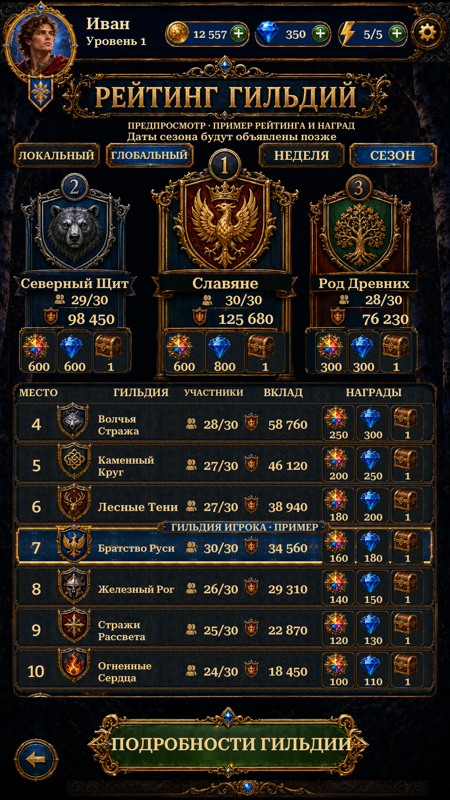

Visual Page22 · Team Ranking
Original podiums, guild emblems, reward icons and Russian title, isolated using Scenario. Live account header, bilingual native controls and a details preview. Standings and rewards are labelled examples.
Implementation and checks · Reference comparison · Asset provenance · Scenario cost

Actual Unity Play Mode ·941×1672·Russian·isolated test save.6 Edit Mode and15 Play Mode tests passed, including Team Hub and Individual Ranking regressions. Nine Team Ranking captures. Scenario:17 isolation jobs,51CU; no regenerated RGB artwork. No APK or physical-phone test.
This initial implementation is not an exact replica. Repaired panel faces, live fonts, reused header, scenery and framing retain documented differences. Online guild rankings, season dates and reward settlement remain later feature work.